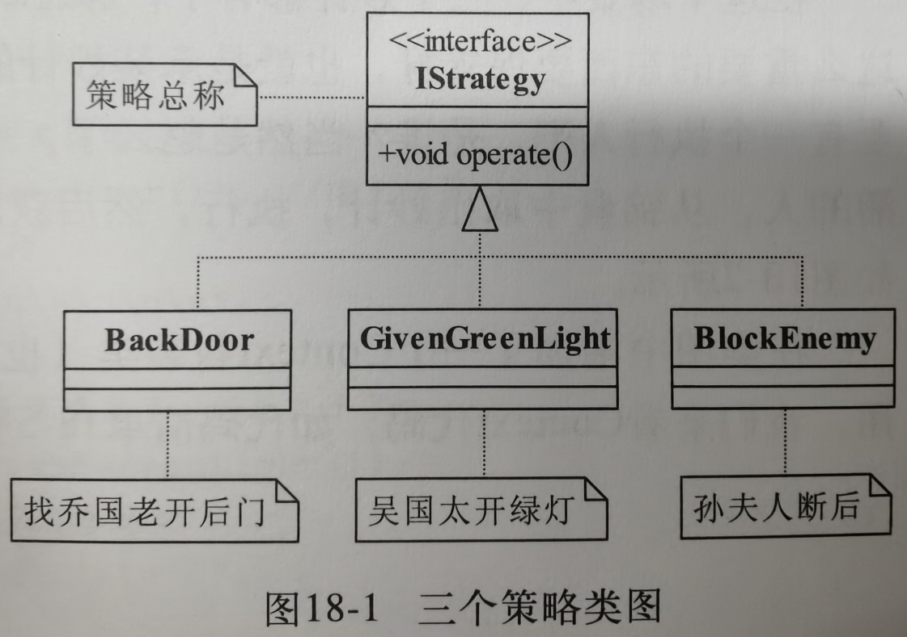
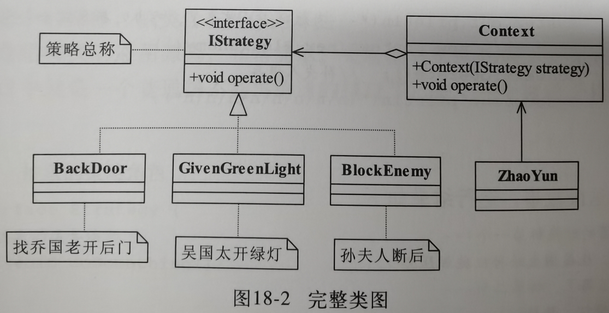
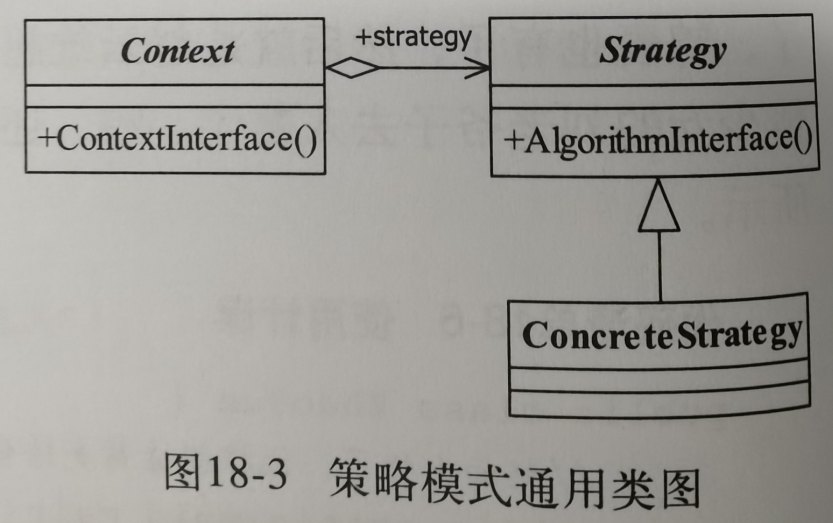
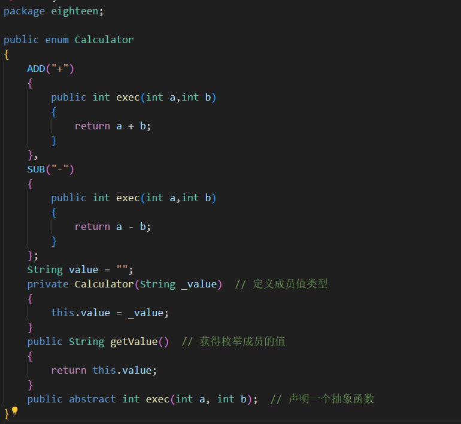

第18章 策略模式
1.例子引入
IStrategy策略接口:
所有策略都需要实现的方法operate执行
BackDoor,GivenGreenLight,BlockEnemy三个具体策略类:
三种不同的执行方法.

Context内容类:
承装三个策略,方便客户端调用
ZhaoYun客户端类:
客户类可以通过Context调用不同的策略.

2.正式定义
Define a family of algorithms,encapsulate each one,and make them interchangeable.
翻译:定义一组算法,将每个算法都封装起来,并且使它们之间可以互换.
示例:在上面的例子当中:三个具体策略类就是一组算法,他们有一个公共的策略接口,我们把算法用Context封装起来,这样只要是同样的策略接口,当中的具体实现策略是可以互换的.
Context封装类:
负责封装算法
Strategy算法接口类:
负责定义算法通用的规则
ConcreteStategy具体算法类:
实现具体的算法

3.应用
优点:
1.算法可以自由切换:只要实现抽象策略就成为策略家族的一员,就可以自由切换了
2.避免使用多重条件判断,策略家族对外提供的访问接口就是封装类,是统一的.需要由其他模块决定何种策略
3.扩展性良好:只要实现策略接口就可以扩展策略
缺点:
1.策略类数量多
2.策略类都需要暴露,上层模块需要知道有哪些策略,才能决定使用哪一个策略.
使用场景:
1.多个类只有在算法或行为上稍有不同的场景
2.算法需要自由切换的场景
3.屏蔽算法规则的场景.
4.扩展
1.直接的加减法,定义两个Int类型,一个string类型标识加减号,然后直接if判断符号返回对应的结果
2.简化这个if直接一个三目运算符 ? :来简化
3.定义一个策略抽象类Calculator,然后分别实现加法和减法作为策略实现类,然后Context类封装起来,最后客户端里面if判断是哪一个策略,然后执行,这是扩展性最好,但是也是最复杂的.
4.采用策略枚举:定义了一个抽象方法exec,然后在每个枚举成员中进行了实现.
